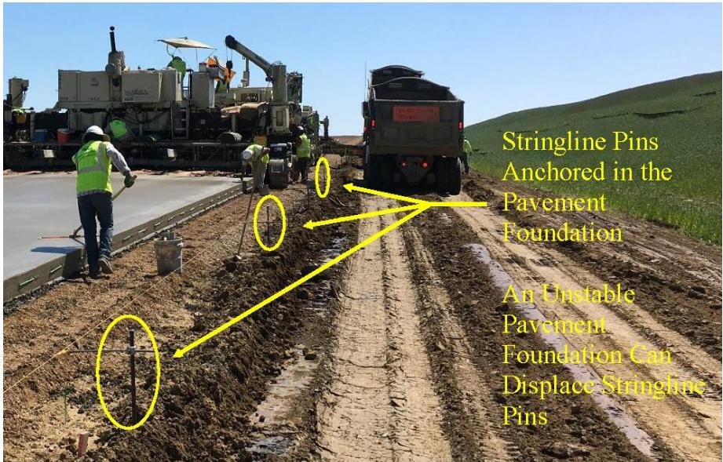
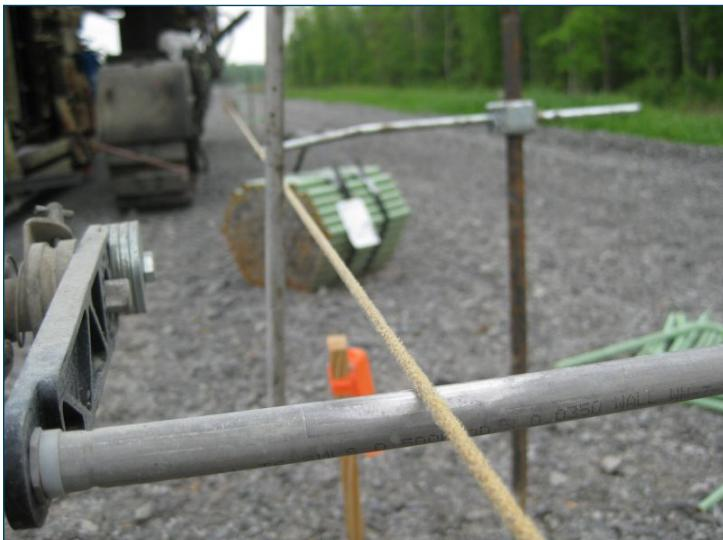
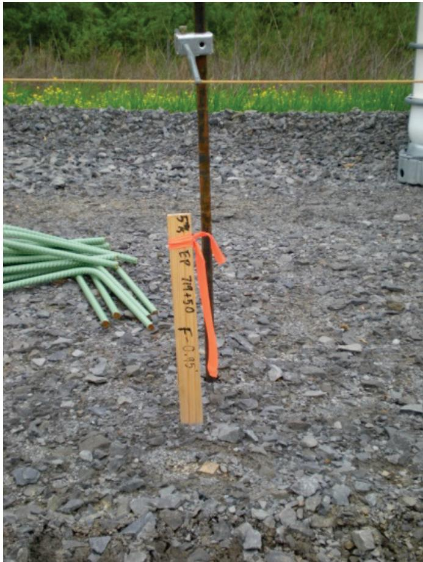
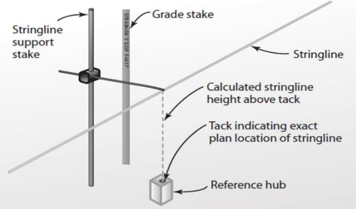
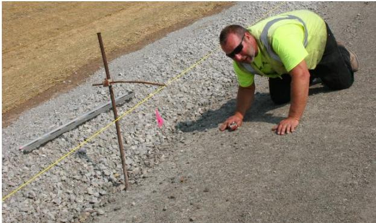
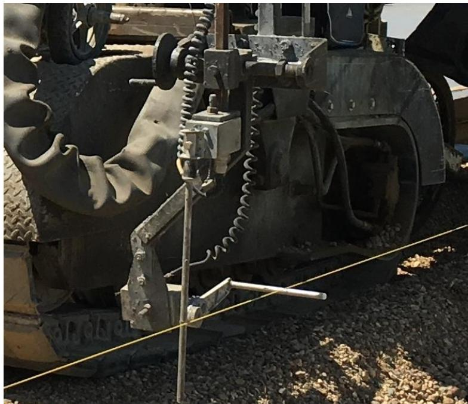

Stringline Elevation Control
Stringline Elevation Control is a traditional guidance method for slip‑form pavers that provides a stable, non‑deflecting physical reference line for the machine’s elevation sensors, eliminating guesswork and reducing deviation from design tolerances[1][2]. The system uses a durable wire, cable, nylon or polyethylene rope tensioned between staking hubs or pins driven into a firm subgrade at intervals no greater than about 25 ft (with winches placed roughly every 1,000 ft), set at the required height above each hub and continuously monitored for sag caused by temperature or humidity[2][5]. When kept taut and aligned, the paver’s profile‑pan sensors can maintain consistent thickness and a smooth surface, while crews perform visual “eyeball” checks and daily sensor inspections to correct any displacement before it creates bumps, dips, or surface roughness[3][4].
Sources (5)
Purpose and applicability
Stringline Elevation Control addresses the fundamental problem of uncontrolled paver elevation and steering that would otherwise produce grade deviations, thickness shortfalls, bumps, dips, and surface roughness. By supplying a stable physical reference for the slipform machine’s sensors, it “provides an accurate positional reference for the slipform paver’s profile pan, eliminating guess‑work and reducing deviation from design tolerances.” When the guide is unstable, “An unstable trackline causes the elevation control system of a paver to continually adjust in an attempt to keep the profile pan in a position relative to the desired pavement surface,” leading to uneven concrete placement. Loose or sagging lines exacerbate this: “Loose ends can cause the sensors to go astray, creating a deviation in the pavement surface.” Consequently, the method eliminates “surface roughness caused by an unstable guide for the paver’s alignment and elevation,” ensuring consistent thickness and a smooth finish. [1][2][3][4][5]
The following figure illustrates common sensor control issues associated with stringline paving.
 Sensor control issues with stringline paving (ACPA 2013). [2]
Sensor control issues with stringline paving (ACPA 2013). [2]
The figure illustrates three distinct failure modes of the sensor system relative to the physical guide wire. The bottom scenarios demonstrate that insufficient tension allows the sensor to pull on the line or lose contact entirely, creating deviations in the pavement surface.
[1] — Ch. 8 (pp. 238–239); [2] — Ch. 5 (pp. 216–221); [3] — 2 Overview of Concrete Pavemen… (p. 30); [4] — 4. Pre-Paving (p. 46); [5] — Stringline (pp. 35–36), Stringline Pins (When Used) (p. 34)
Stringline elevation control is appropriate when a stable, non‑yielding trackline or pavement foundation exists and reference hubs can be installed at regular intervals. The guides note that “The string line has been the primary guidance system for a slipform paver” and that “Stringline paving is the more traditional method for paver elevation and steering control, and it is allowed by both FAA and DOD.” A well‑positioned line requires hubs or pins typically placed 25 ft apart (“Stringline systems require paving hubs (or pins) typically placed 25 ft apart”) and must be set at the proper height above the subgrade – “A well‑positioned string line can help overcome minor surface deviations in a base or trackline, but it is not a substitute for a smooth, stable trackline built to a tight tolerance.” Construction staking that provides these reference hubs (“Construction staking is the process of placing reference hubs for alignment and elevation of the finished pavement”) allows the “Stringline set from these reference hubs controls the steering and elevation of fine grade trimmers and pavers.” The condition “when a stringline is used for steering and elevation control” therefore presumes a firm, non‑yielding base.
When the underlying base or foundation yields, pumps, or otherwise moves the pins – “A pavement foundation that yields and pumps can displace the stringline pins, resulting in pavement roughness.” – or when the trackline exhibits significant vertical variation – “An unstable trackline causes the elevation control system of a paver to continually adjust … These types of adjustments cause bumps or dips in the resulting pavement surface” – the guides recommend using an alternative. Options include ski‑sensor or “locking to grade” methods, 3‑D machine‑control (stringless) systems, or laser/GPS‑based controls. Stringless approaches are described by “Stringless controls (GPS, laser or combinations) are available for fine grading and paving equipment” and require that “Control points for stringless paving should be established from accurate field surveying and tied to known benchmark(s).” The supporting model data must follow manufacturer guidance – “The models (data) used for stringless machine control should be prepared in accordance with the manufacturer’s recommendations and independently checked for accuracy.” [1][2][4][5]
The following figure illustrates how stringline pins can become compromised when anchored in such an unstable pavement foundation.

Stringline pins anchored in an unstable pavement foundation [5]The image displays a construction site where stringline pins are driven into the ground adjacent to a slip-form paver and a dump truck. Yellow annotations highlight that these pins support the stringline used for steering and elevation control, while pointing out that an unstable pavement foundation can displace them. The figure demonstrates that if the underlying base yields or pumps, the resulting displacement of these pins causes roughness in the finished pavement.
[1] — Ch. 8 (pp. 238–239); [2] — Ch. 5 (pp. 216–221); [4] — 4. Pre-Paving (p. 46); [5] — Stringline Pins (When Used) (p. 34)
Required inputs
Stringline elevation control relies on a durable line made from wire, cable, woven nylon, polyethylene rope, or preferably aircraft cable; poly‑filled or cable‑core lines are also acceptable provided they can be tensioned to eliminate sag. The line is anchored with staking pins that are driven firmly into a stable subgrade and left with enough exposed length (approximately 1.5–2.5 ft) to permit height adjustment. Pins must be placed at no greater than 25 ft intervals, while winches used for tensioning should be positioned no farther than about 1,000 ft apart and the line re‑checked after five days. Continuous monitoring of tautness is required because temperature and relative humidity cause expansion or contraction; any sag must be corrected before paving proceeds. A known mass may be hung at mid‑span to verify uniform deflection. The guides do not prescribe any particular concrete mixture properties for this control method, focusing instead on proper surveying, base‑course height control, and precise line tension. [2][5]
[2] — Ch. 5 (pp. 216–221); [5] — Stringline (pp. 35–36)
The guides require that reference hubs (or pins) be installed no farther than 25 ft apart and driven deep enough to hold firm in the subgrade. Each stake must leave an exposed length sufficient to set the stringline at the required elevation—typically six inches to one‑and‑a‑half feet, or where specified up to two‑and‑a‑half feet—above the survey hub. The stringline system shall use a non‑deflecting material such as wire, cable, woven nylon or polyethylene rope; splices and repositioning frequency are recognized as factors that can affect the resulting pavement surface. On straight (tangent) sections the maximum spacing between stakes is limited to 25 ft; tighter intervals are required in curves. Hand winches are placed at intervals not greater than about 1,000 ft to permit tension adjustments that counteract sag caused by temperature or humidity changes.
Before paving begins a complete set‑out list is generated, each hub located with total‑station or GPS, pins installed on both sides of the lane and pin alignment verified. The stringline is then spliced, tensioned, and visually “eyeballed” to confirm it is taut and at grade within project tolerances; any deviation triggers immediate repositioning of misaligned stakes. If a line has remained in place for more than five days it must be re‑tensioned. Uniform sag is checked by hanging a known mass at the midpoint of each segment and measuring its deflection; adjustments to tension or sensor spring are made until all segments show consistent deflection.
Elevation sensors must be installed according to the manufacturer’s guidelines, aligned as parallel as possible to the stringline and slip‑form pan, and inspected daily for proper response time and hydraulic integrity. The contractor and surveyor must clearly communicate, agree and verify the hub offset and whether grades will be applied as flat or projected values before work commences. [1][2][3][4][5]
The figure below illustrates the sensor rods used to track alignment and elevation.

Sensor rods that track alignment and elevation [3]The image displays a close-up view of the front section of a slip-form paver, specifically focusing on the sensor assembly mounted to the forming pan. A taut stringline is visible running parallel to the machine’s path, serving as the physical reference for the sensors. The alignment of these components ensures that the forming pan remains parallel to the stringline, which reduces the attack angle and provides a smoother finish on the pavement surface.
[1] — Ch. 8 (pp. 238–239); [2] — Ch. 5 (pp. 216–221); [3] — 2 Overview of Concrete Pavemen… (p. 30); [4] — 4. Pre-Paving (p. 46); [5] — Stringline (pp. 35–36)
Equipment and personnel
The guides describe a coordinated crew structure for stringline elevation control. Construction staking is the process of placing reference hubs for alignment and elevation of the finished pavement, which defines the line that controls steering and elevation of fine‑grade trimmers and pavers. The survey or string‑line crew must have considerable experience to properly “eyeball” corrections to a string line due to a deviation in the grade, and when a deviation is noticed, the crew should reposition misaligned stakes immediately. A maximum spacing between stakes of no more than 25 ft on tangent sections will produce the best results. Setting and tensioning the stringline is typically a minimum two‑person operation; operators are cautioned to apply stringline tension carefully, following company procedures, because a line break may cause injuries, and the person performing this QC step must crouch down to get the best perspective. Paver and fine‑grade trimmer operators continuously monitor checking the paving machine position relative to the stringlines while steering and controlling elevation. All laborers handling ancillary equipment must work without disturbing the lines. It is critical that the contractor and surveyor clearly communicate, agree and verify that the offset and grade will achieve the desired result before paving begins. [1][2][4]
The following figure illustrates a surveyed reference hub and stringline.

Surveyed reference hub and stringline setup on a construction site. [4]The image displays a wooden survey stake driven into the gravel subgrade, serving as a physical reference point for pavement elevation control. A taut stringline is attached to the top of the hub and extends horizontally across the site, providing a stable reference line for machine sensors. The stake is marked with handwritten survey data, indicating its specific role in defining the alignment and grade for the finished pavement.
[1] — Ch. 8 (pp. 238–239); [2] — Ch. 5 (pp. 216–221); [4] — 4. Pre-Paving (p. 46)
Work sequence
Before starting stringline elevation control, the design must be reviewed and set‑out lists prepared for each lane. A detailed survey is then performed to establish graded paving hubs that define both alignment and target elevation. Using a total station or GPS, reference hubs or pins are located, placed and marked on both sides of the concrete lanes, hammered or drilled in, and their offset and grade are verified through contractor‑surveyor communication. String lines are installed along the grade, typically on both sides of the paver, with the profile‑pan sensors referencing these physical guides (or an equivalent 3‑D virtual reference). Stakes securing the line are driven firmly into the subgrade; enough stake length must be exposed above grade to set the line at the required height (approximately six inches to one‑and‑a‑half feet), and stakes are spaced no more than about twenty‑five feet on straight sections. The stringline height is surveyed and set on each pin before moving the paving machine into position. Finally, the paver’s sensor system is prepared: sensors are aligned according to the manufacturer’s guidelines, inspected daily, response time verified and dampened as needed, the slip‑form pan is positioned as parallel as possible to the stringline, and any hydraulic leaks are identified and corrected. [1][2][3][4][5]
The figure below illustrates a proper stringline hub, highlighting the required components for this critical setup step.

Diagram of a stringline elevation control setup showing the relationship between reference hubs, support stakes, and the tensioned guideline. [2]The figure illustrates the physical components required for traditional paving guidance, specifically identifying a ‘Reference hub’ at ground level and a vertical ‘Stringline support stake’. The diagram details how the stringline height is established relative to a ‘Tack indicating exact plan location’ on the hub and verified against a ‘Grade stake’.
[1] — Ch. 8 (pp. 238–239); [2] — Ch. 5 (pp. 216–221); [3] — 2 Overview of Concrete Pavemen… (p. 30); [4] — 4. Pre-Paving (p. 46); [5] — Stringline (pp. 35–36)
Step 1: Inspect the pavement design and calculate set‑out lists for each lane of paving (pilot lanes). Conduct a survey to provide graded paving hubs for alignment and elevation, using a total station or GPS to locate and stake reference hubs at the required offset and grade.
Step 2: Install the reference hubs – “Construction staking is the process of placing reference hubs for alignment and elevation of the finished pavement.” Position paving hubs at an offset that will minimize disturbance from and to the construction processes.
Step 3: Hammer (or drill) pins on both sides of each lane; “Space the stringline pins at no more than 25 ft center‑to‑center.” Verify pin alignment before proceeding.
Step 4: Survey and set the stringline height on each pin – typically 1.5 to 2.5 ft above the hub – in a minimum two‑person operation; install clamps as required (“Surveying and setting the stringline height on each pin. This is typically a minimum two‑person operation”).
Step 5: Run the chosen line material (wire, cable, nylon or polyethylene rope) between pins. “The staking system normally involves placing hand winches at intervals not greater than about 1,000 ft.” Tension each segment so that deflection is uniform for all segments – a known mass may be hung midway to measure sag and adjust until sag is uniform (“Tension each segment of stringline so that the deflection is uniform for all segments”).
Step 6: Adjust the line for grade and elevation. “Stringline set from these reference hubs controls the steering and elevation of fine‑grade trimmers and pavers.” Verify that the minimum concrete thickness will be achieved at every pin; raise the line where the base course is high (“Raise the stringline where the base course is high”).
Step 7: Set the paver’s sensors (adjustable spring) to follow the stringline. Measure sag ahead of the paver and re‑measure as the wand passes, adjusting tension or spring as needed to prevent lifting and maintain pavement smoothness.
Step 8: Move the paver into position, confirm machine alignment relative to the line, and commence production. Continuously monitor the line for sag or displacement caused by temperature or humidity changes, protect it from disturbance, and re‑tension as required throughout paving. [2][4][5]
[2] — Ch. 5 (pp. 216–221); [4] — 4. Pre-Paving (p. 46); [5] — Stringline (pp. 35–36)
When a stringline is employed for elevation control, the guideline specifies only one explicit timing limit: if the line has remained in place for more than five days it must be inspected and re‑tensioned before paving proceeds. All other steps—spacing pins, tensioning with a winch, hanging a test mass, setting grade, and eyeballing smoothness—are not assigned specific time windows in the procedure. [5]
[5] — Stringline (pp. 35–36)
Staging and logistics
Stringline elevation control manages the construction zone by first coordinating hub placement with the survey crew so that pins are set outside any material‑delivery lanes, stockpile areas, or traffic routes that could interfere with paving. Throughout the pour, all laborers, trucks and equipment operating near the line—such as dowel‑basket installers, water crews, and concrete haulers—are required to keep clear of the stringline and its tensioning hardware, and the crew continuously eyeballs the line ahead of the paver to detect sag or accidental displacement. Any disturbance triggers immediate adjustment of tension or repositioning of pins, ensuring that access routes and equipment movement remain stable and do not compromise alignment or elevation tolerances. [2]
The following figure illustrates important steps in stringline setup.

A construction worker inspects the tension of a stringline used for pavement elevation control. [2]The image shows a worker in high-visibility gear kneeling on an asphalt surface to inspect a yellow line stretched between stakes and wooden hubs. This setup demonstrates the physical reference system used for slip-form pavers, where maintaining tautness is critical because variations in weather conditions can cause sags that lead to surface roughness. The worker’s action illustrates the continuous monitoring required to ensure the stringline remains stable for the machine’s elevation sensors.
[2] — Ch. 5 (pp. 216–221)
The guides agree that sufficient physical clearance and regular inspection are essential for reliable stringline elevation control. Space constraints dictate that stakes be positioned no farther than about 25 ft apart on straight runs, with tighter intervals in curves, and each stake must project at least six inches to one‑and‑half foot above the subgrade to allow height adjustment. Site‑access requirements call for staking hubs to be located away from paving equipment, haul roads, and other airport activities; coordination between survey crews and construction traffic is required so that the line remains clear yet reachable for inspection, with hand winches or re‑tension points placed at intervals not exceeding roughly 1,000 ft. Weather influences are managed by continuous tension checks because temperature and humidity changes can lengthen or shorten the line, creating sag; in windy conditions additional anchoring such as sandbags is often employed. Environmental factors such as subgrade heaving, settling, or a yielding pavement foundation can shift or displace pins, forcing abrupt paver corrections that degrade smoothness, so any movement of the base must be corrected immediately. [1][2][5]
[1] — Ch. 8 (pp. 238–239); [2] — Ch. 5 (pp. 216–221); [5] — Stringline (pp. 35–36), Stringline Pins (When Used) (p. 34)
Quality control and acceptance
The inspections for stringline elevation control focus on the physical line system, its anchorage, tension condition, and the sensor‑driven elevation hardware that follows it. Inspectors first confirm that the line material (wire, cable, nylon or polyethylene rope) is intact and that each staking hub is driven firmly into the subgrade. The exposed portion of each stake must be sufficient to set the required height; as one guide states, “There must be an adequate stake length exposed above the grade to allow adjustment of the string line to the desired height above the subgrade survey hub, typically 6 in. to 1.5 ft.” Stake spacing is limited to prevent sag: “A maximum spacing between stakes of no more than 25 ft on tangent sections will produce the best results,” and tighter intervals are required in curves. Pin or hub alignment is visually verified before each segment is tensioned, and any misalignment is corrected.
Tension integrity is tested by ensuring uniform deflection under a known load; “Tension each segment of stringline so that the deflection is uniform for all segments.” When the line has been in place for several days, re‑tensioning is required if sag is detected. The sensor wand spring must be matched to the line tension, and the paver’s elevation sensors are inspected daily: “Align sensors according to the manufacturer’s guidelines,” with additional checks that response time is appropriate and that hydraulic leaks are absent, because fluid loss can alter sensor‑driven adjustments.
Finally, the offset and grade of each hub are verified against design values through a joint contractor‑surveyor review; clear communication ensures that the established elevation will be achieved. Throughout paving, an “eyeball” visual inspection is performed to detect any movement, sag, or damage to the line or pins, and any deviation beyond tolerance triggers immediate correction. [1][2][3][4][5]
[1] — Ch. 8 (pp. 238–239); [2] — Ch. 5 (pp. 216–221); [3] — 2 Overview of Concrete Pavemen… (p. 30); [4] — 4. Pre-Paving (p. 46); [5] — Stringline (pp. 35–36)
The guides agree that measurement of stringline elevation begins at set‑up: once the line is tensioned a known weight is hung at mid‑span and the resulting sag is measured to establish the target deflection. From that point onward, crews perform visual inspections (“eyeballing”) of the line continuously throughout the paving shift—starting before production, repeating at regular intervals until the job ends, and watching for any sag, heave, or displacement so that stakes can be repositioned immediately when a deviation is observed. In addition to eye checks, sensor rods used in automated systems are aligned according to manufacturer instructions and inspected daily, preferably continuously during the shift, to catch drift. Spot‑checks are also prescribed: the height of the stringline is measured from a flat reference surface ahead of the paver and again as the sensor wand passes the same point, allowing prompt correction of any lift or sag. If a line remains in place for more than five days, a re‑measurement and re‑tensioning are required. [1][2][3][5]
The following figure illustrates a paver sensor in contact with the stringline.

Paver sensor in contact with the stringline [5]The image displays a close-up of a slip-form paver’s undercarriage, specifically focusing on the profile pan assembly. A vertical metal sensor wand extends from the machine to maintain physical contact with a taut yellow stringline stretched across the gravel subgrade. The sensor that follows the stringline and controls the paver hydraulic system uses an adjustable spring that keeps the sensor in contact with the stringline.
[1] — Ch. 8 (pp. 238–239); [2] — Ch. 5 (pp. 216–221); [3] — 2 Overview of Concrete Pavemen… (p. 30); [5] — Stringline (pp. 35–36)
Under Stringline Elevation Control the work is accepted only when the paver follows the established outside reference lines and the grade and elevation are within the tolerances called for in the project specifications; this requires that each hub be set at the correct offset and height (typically 1.5 to 2.5 ft above the pin) using a total‑station or GPS, that a taut stringline of approved material be installed, continuously inspected for sag and tension, and that visual “eyeballing” checks verify alignment before and during paving. If any measurement shows the grade or alignment outside those tolerances, the contractor is required to correct the deviation, remove and replace the affected concrete, and bear all associated costs regardless of who placed the erroneous stake. Continuous monitoring of stringline condition and prompt adjustment of tension are essential to prevent sensor drift that would otherwise create non‑conforming pavement. [2]
[2] — Ch. 5 (pp. 216–221)
Safety and environmental controls
Stringline elevation control creates several safety risks for personnel working in the paving zone. The line is kept under high tension, so an uncontrolled release can injure workers, and the presence of a taut wire or cable alongside concrete‑paving equipment, trucks and laborers means that trips, falls or collisions are possible if the stringline is disturbed or its ends become loose. Workers must continuously monitor the line’s sag and tension, which requires crouching close to the guide and handling winches, further exposing them to pinch points and potential snap‑back injuries. The source does not identify any distinct hazards to members of the public beyond the general need to keep the construction area secured. [2]
[2] — Ch. 5 (pp. 216–221)
Expected performance and maintenance
The guides note that when the trackline or stringline lacks stability—whether because stakes are spaced too far apart, tension is lost, or the foundation beneath the pins yields—the paver’s elevation wand must make rapid corrections. Such abrupt or frequent adjustments “cause bumps or dips in the resulting pavement surface” and can also produce overall roughness. Loose or sagging sections of line, including “Loose ends can cause the sensors to go astray, creating a deviation in the pavement surface,” arise from temperature‑humidity changes, accidental disturbance, or improper splicing, and they shift the sensor reference. Misalignment of the sensors or the pan itself leads to incorrect depth control; as one source explains, “If the pan is not aligned with sensors, it will adjust itself incorrectly, resulting in improper concrete depths, a nonuniform placement leading to differential shrinkage cracking, and surface imperfections.” Finally, mechanical details such as spring tension affect line lift: when “If this spring is not adjusted properly to the tension of the stringline, the sensor wand may lift the string between pins, resulting in pavement roughness.” Collectively these failures manifest as bumps, dips, sags, uneven thickness, differential cracking and overall surface roughness. [1][2][3][5]
[1] — Ch. 8 (pp. 238–239); [2] — Ch. 5 (pp. 216–221); [3] — 2 Overview of Concrete Pavemen… (p. 30); [5] — Stringline (pp. 35–36), Stringline Pins (When Used) (p. 34)